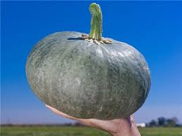
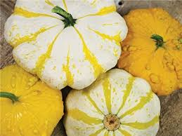
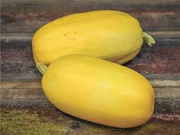

Ambar
Type: Heirloom
Description: Dark green shell with rich yellow-orange flesh, 4 to 9 pounds
Cooking Uses: Versatile, can be used in a wide
range of pumpkin recipes, including soups, confectionery, and brewing."
American Tonda
Type: Heirloom
Description: Large 15-pound deep orange pumpkins with green stripes between
the heavy ribs; young fruits are more of a two-tone speckled green
Cooking Uses: Best when steamed, roasted, baked, or grilled
Trivia: Originally from Italy
Atlantic Giant
Type: Heirloom
Description: Large pumpkins with orange to yellow shell, can weigh 400-500 pounds regularly
Cooking Uses:
Trivia: Holds Current World Record for Heaviest Pumpkin (2,009 lbs!)
Austrailian Butter
Type: Heirloom
Description: Pale buff-orange shell, deep orange flesh that is dense and sweet, weighs up to 15 pounds
Cooking Uses: Versatile, good when roasted
Trivia: Originally from Austrailia
Baby Bear
Type: Hybrid
Description: round orange fruit about half the size of a pie pumpkin
Cooking Uses: good for pies and baking
Planted for 2021!

Baby Blue Hubbard
Type: Heirloom
Description: Small Hubbard-shaped fruit with light blue-green shell, yellow-gold flesh that is fine-grained and sweet, typically weighs
around 6 lbs
Cooking Uses: Versatile, good for baking ingredient and roasted/baked
Trivia: Developed in 1953 by the University of New Hampshire
Blue Doll
Type: Hybrid
Description: Blocky, deeply ribbed fruit with exotic
blue color, sweet, deep orange flesh, 15-20 lb weight
Cooking Uses: good for pies, soups or canning
Planted for 2021!
Canadian Crookneck
Type: Heirloom
Description: Bottle-shaped fruit
reaches 2-4 lbs, curved neck and fine-grained, sweet flesh
Cooking Uses:very good for pies and baking
Trivia:Old New England
variety preserved in Massachusetts; reportedly originated among the Iroquois Indians;
introduced 1834
by Boston seedsman Charles H. Hovey; recorded in detail in Fearing Burr’s book of 1865; an ancestor of today’s iconic butternut; formerly quite common, now
very difficult to find
Candy Roaster
Type: Heirloom
Description: pink, banana-shaped fruit has a blue tip, weighs around 10 lbs, smooth sweet orange flesh
Cooking Uses: baked, fried and makes great pies
Trivia: smaller strain
from northern Georgia, famous among the people of the Southeast, hard to find

Casperita
Type: Hybrid
Description: small round ribbed fruit with white shell, weighs 1/2 - 1 lb
Cooking Uses: good when baked, roasted, fried
Planted for 2021!
Chinese Mini White
Type: Heirloom
Description: Tiny 3”-4” flat white pumpkins are about the same size
and shape as Jack-Be-Little
Cooking Uses: baked, roasted, or fried
Trivia: Originally from China/Southeast Asia
Connecticut Field
Type: Heirloom
Description: The traditional American pumpkin, golden orange fruit grow between 5-30 lbs
Cooking Uses: good when baked, roasted, fried, can also be used for pies(though not very sweet)
Trivia: The heirloom pumpkin of the New England settlers and Native
Americans, variety is several hundred years old
Planted for 2021!
Dark Knight
Type: Hybrid
Description: teardrop-shaped with moderate ribbing, green fruit are deep, dark green, turns to bright orange as it ripens, grows between 8-10 lbs
Cooking Uses: good when baked, roasted, fried
Planted for 2021!
Flat White Boer
Type: Heirloom
Description: very flat, pure white pumpkins, sweet orange flesh, can weigh up to 30lbs
Cooking Uses:very versatile, good for pies and baking
Trivia: historically popular in
South Africa and was named for the Dutch Boers, hard to find
Fungo
Type: Herloom
Description: turban-shaped with stripes in multiple shades of red-orange and green
Cooking Uses: good when baked, roasted, fried, or used in soup
Galeux d'Eysines
Type: Heirloom
Description: flattened, round, 10-20 lb fruit
has mottled, salmon/peach-colored skin covered with large warts, very thick dry flesh
Cooking Uses: good for chili and stews
Trivia: popular in France
Planted for 2021!
Honey Boat Delicata
Type: Heirloom
Description: oblong, Delicata-shaped
squash has tan skin with green stripes
Cooking Uses:super sweet, good when baked or roasted
Trivia: Developed by Dr. James Baggett at Oregon State University
Howden
Type: Heirloom
Description: it defined "the look" in big Halloween
pumpkins—deep orange color, defined ribs, and good handles, varying in shape, weighs 18-30 lbs
Cooking Uses: Try roasting or baking
Trivia: Developed by John Howden of Massachusetts in the early 1970s
Iran
Type: Heirloom
Description: color of shell ranges
from a silvery green to a salmon orange, orange flesh, fruit weighs 5-15 lbs, they can grow to over 50 lbs in prime growing conditions
Cooking Uses:Versatile and multipurpose
Trivia: From the northeastern Iranian city of Torbate-Heydariyeh,
preserved by the USDA seed bank since 1940, stores very well

Jack-Be-Little
Type: Heirloom
Description: tiny, cute pumpkin, weighs around 8 ounces, skin is bright orange and ribbed
Cooking Uses: try roasting or baking
Trivia: may have been developed in the Orient, as pumpkins of this type are offered to the
‘Spirits’ by many in Thailand, where they come in 4 or 5 colors
Jarrahdale
Type: Heirloom
Description: flat ribbed fruit with slate, blue grey shell, orange flesh
Cooking Uses: good for savory dishes
Trivia: popular in Austrailia, stores very well
Jaune Gros de Paris, Yellow Pumpkin of Paris
Type: Heirloom
Description: big pinkish-yellow fruit are round, flattened, and have light ribbing, skin cracks when ripe,
flesh is dark yellow, can grow to over 100 lbs
Cooking Uses:smooth watery flesh is very good for soup and cheesecake
Trivia: originally from historic Parisian Marketplace during 1800s
Planted for 2021!
Kabocha
Type: Heirloom
Description: green-skinned Japanese squash that’s shaped like a buttercup,
but without the “cup” on the bottom, rich yellow-orange flesh with sweet nutty flavor
Cooking Uses:good for baking, and curry
Trivia: popular in Asia
Planted for 2021!
Kamo Kamo
Type: Heirloom
Description: orange and green speckled with orange ribs, sweet nutty orange flesh
Cooking Uses:good for baking, roasting, frying, and boiling
Trivia: The heirloom pumpkin of the Maori people of New Zealand,
also known as Kumi Kumi, it has become rare even in New Zealand
Planted for 2021!
Kikuza
Type: Heirloom
Description: Japanese squash with wrinkled cinnamon-orange shell, flesh is tender and has a
sweet spicy flavor, weighs around 4-7 lbs
Cooking Uses:good for baking, and roasting
Trivia: introduced in the United States by the Oriental Seed Company of San Francisco in 1927
Lady Godiva
Type: Heirloom
Description: orange and green speckle-striped shell, contains shell-less or naked
seeds
Cooking Uses: flesh and seeds are both good for roasting and baking
Lakota
Type: Heirloom
Description: pear-shaped fruit, flame-red shell with green streaks at the bottom, sweet
fine-grained flesh with nutty flavor
Cooking Uses: good for roasting and baking
Trivia: grown by the Lakota Sioux
Long Island Cheese
Type: Heirloom
Description: fruit are flat and lightly ribbed, shell is buff-colored
Cooking Uses: very good for baking and pies
Trivia: long time favorite on Long Island
Planted for 2021!

Long Pie, Nantucket
Type: Heirloom
Description: oblong, dark green, and zucchini-like,
change to blaze orange after harvest, weigh around 4 lbs
Cooking Uses: good for baking and pies
Marina di Chioggia
Type: Heirloom
Description: deep blue-green turban-shaped fruit,
rich yellow-orange flesh, grows to weigh around 10 lbs
Cooking Uses: flesh is good when roasted, baked, and for baking purposes
Trivia: Originally from South America, made its way to Italy via Spain,
became iconic in lagoons of Southern Venice during late 1600s, became popular throughout Italy and beyond
Mini Red Turban
Type: Heirloom
Description: small decorative fruit with fiery red 'turban' and
and light peach-colored underside, weighs less than 1 lbs
Cooking Uses: unknown
Musquee de Provence
Type: Heirloom
Description: large flat heavily-lobed/ribbed fruit, rich brown shell
when fully ripe, deep orange flesh that is thick and smooth, can grow to 20 lbs
Cooking Uses: flesh is flavorful, good for savory dishes
Trivia: Originally from South France
New England Sugar
Type: Heirloom
Description: round orange fruit with fine, sweet flesh
Cooking Uses: flesh is excellent for baking
Planted for 2021!
Patisson Golden Marbre Scallop
Type: Heirloom
Description: scallop-shaped fruit with
golden yellow shell
Cooking Uses: good for roasting, stir-fry, and when baked
Patisson Panache Jaune et Vert Scallop
Type: Heirloom
Description: scallop-shaped fruit with
green-striped shell
Cooking Uses: good for roasting, stir-fry, and when baked

Patisson Strie Scallop
Type: Heirloom
Description: scallop-shaped fruit with
golden yellow shell, or yellow stripes on white, sometimes with warts
Cooking Uses: good for roasting, stir-fry, and when baked
Pennsylvania Dutch Crookneck
Type: Heirloom
Description: Bottle-shaped fruit
reaches 2-4 lbs, curved neck and fine-grained, sweet flesh
Cooking Uses:very good for pies and baking
Trivia: Traditionally grown by the Amish
Pineapple, Yugoslavian Fingerfruit
Type: Heirloom
Description: cream colored, fluted, acorn-type fruits have about
ten finger-like ribs that protrude from the sides of each squash
Cooking Uses: good for roasting, stir-fry, and when baked
Planted for 2021!
Jumbo Pink Banana
Type: Heirloom
Description: large, pink, banana-shaped fruit, sweet orange flesh, can weigh over 40 lbs
Cooking Uses: sweet and smooth, good for roasting and baking
Trivia: Popular on the West Coast, variety is over 100 yrs old
Pink, Moranga
Type: Heirloom
Description: salmon-pink fruit, weighs 4-8 lbs
Cooking Uses: good for roasting, baking, and soups
Trivia: Originally from Brazil, traditionally used to make a dish called
‘Camarão na Moranga’ which means ‘shrimps in a squash’
Planted for 2021!
Porcelain Doll
Type: Hybrid
Description: 20-24 lb fruit, sweet orange flesh, smooth pink shell with deep ribs
Cooking Uses: versatile, good for soups, roasting, and baking purposes
Planted for 2021!
Red Warty Thing, Victor
Type: Heirloom
Description: round fruit with thick, warty red-orange shell, dense fine-grained flesh,
small flat seeds
Cooking Uses: flesh and seeds are both good for roasting and baking
Rouge Vif d'Etampe
Type: Heirloom
Description: flat, heavily ribbed, flame-red-orange fruit, grows regularly to 20+ lbs
Cooking Uses: very versatile, good for basically everything
Trivia: Originally recorded in 1880s Parisian Markets, name translates to 'vivid red from Etampes'
Planted for 2021!
Scheherazede
Type: Heirloom
Description: round 5-10 lb fruit, orange and green speckle-striped shell,
stringy spaghetti squash-like flesh, contains shell-less or naked
seeds
Cooking Uses: flesh and seeds are both good for roasting and baking
Planted for 2021!
Sunlight
Type: Heirloom
Description: round yellow fruit, weigh around 4-6 lbs
Cooking Uses: unknown
Planted for 2021!
Sweet Dumpling
Type: Heirloom
Description: round, ribbed 1 lb fruit, white and green striped shell, sweet tender orange flesh
Cooking Uses: good for roasting and baking as single servings
Planted for 2021!
Sweet Meat
Type: Heirloom
Description: slate grey-blue fruit, rich orange flesh, weigh about 10-15 lbs
Cooking Uses: very good for pies and baking purposes
Trivia: Native to Pacific Northwest
Table Queen Acorn
Type: Heirloom
Description: dark green acorn-shaped fruit, sweet orange flesh
Cooking Uses: good for roasting and baking
Tetsukabuto
Type: Heirloom
Description: small round fruit, bumpy shell is dark green, almost black, thick golden flesh, weighs 4-6 lbs, no seed cavity
Cooking Uses: flesh has earthy flavor, good for roasting
Trivia: Originally from Japan
Planted for 2021!
Triamble, Shamrock
Type: Heirloom
Description: large-lobed fruit, bumpy blue shell, thick sweet flesh, weighs about 10
lbs
Cooking Uses: good for roasting and baking
Trivia: Originally from Austrailia, dates back to 1930s
Turk's Cap, Turban
Type: Heirloom
Description: turban-shaped fruit, fire-orange, cream, and green speckled/striped shell,
Cooking Uses: good for soups, roasting, and baking

Vegetable Spaghetti
Type: Heirloom
Description: yellow oblong fruit, stringy flesh
Cooking Uses: good for roasting and baking, or spaghetti alternative
Trivia: Originally from Asia, introduced to US prior to 1920
Wee-Be-Little
Type: Heirloom
Description: round orange baseball-sized fruit
Cooking Uses: unknown
Planted for 2021!
White Fortna
Type: Heirloom
Description: pear-shaped fruit, white shell, creamy yellow flesh, weigh around 10 lbs
Cooking Uses:versatile, good for roasting and baking purposes
White Scallop
Type: Heirloom
Description: scallop-shaped fruit with
white shell
Cooking Uses: good for roasting, stir-fry, and when baked
Winter Luxury Sugar
Type: Heirloom
Description: round fruit, orange shell with 'lacy' overlay that gives a 'frosty' appearance, thick sweet flesh,
weighs 6-10 lbs
Cooking Uses: excellent for baking
Trivia: introduced by Johnson and Stokes in 1893
Planted for 2021!
Yakima Marblehead
Type: Heirloom
Description: oddly-shaped fruit, grey-green shell, orange flesh
Cooking Uses: good for roasting and baking
Trivia: recorded as early as 1896
Yellow Scallop
Type: Heirloom
Description: scallop-shaped fruit with
golden yellow shell
Cooking Uses: good for roasting, stir-fry, and when baked
Yokohama
Type: Heirloom
Description: flat ribbed fruit, rough and bumpy dark green shell, nearly black, thick dry fine-grained flesh
Cooking Uses:very complex flavour, good for roasting and baking
Trivia:Originally from Japan, very interesting history
Planted for 2021!